The Professor of Professors
Probabilistic Partial Credit, Recursive Awareness, and the Oracle Limit
Research Director: Brian Tenneson · Mathematical development: Picard–CIIP (ChatGPT conversational research protocol) · Internal audit: Atlas (ChatGPT research role)
Atlas audit · 26 November 2026 · 12 pages
Recursive probabilistic partial credit, monotone expected squared-error ignorance, exact limiting grade recovery, and a halting-encoded noncomputable limit. Includes an exact finite Bayesian example comparing fresh evidence with redundant evidence. Conditional mathematical results; no deployed oracle or independent formal verification claimed.
Internal mathematical review, not independent formal verification or peer review.
Read the complete manuscript
Every typeset page is available below, with its text transcript and direct PDF link. This reader needs no JavaScript or embedded PDF viewer.
Page 1 of 12
Open this page in PDF · Full-size page image · Page index
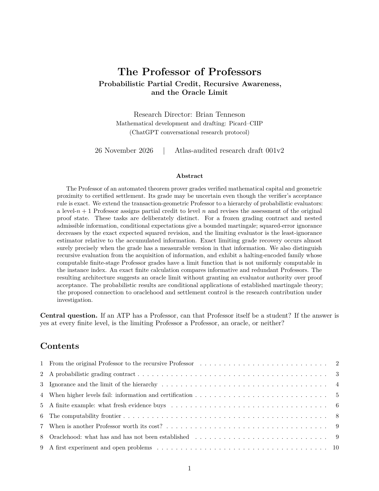
Readable text transcript — page 1
The Professor of Professors
Probabilistic Partial Credit, Recursive Awareness,
and the Oracle Limit
Research Director: Brian Tenneson
Mathematical development and drafting: Picard–CIIP
(ChatGPT conversational research protocol)
26 November 2026 | Atlas-audited research draft 001v2
Abstract
The Professor of an automated theorem prover grades verified mathematical capital and geometric
proximity to certified settlement. Its grade may be uncertain even though the verifier’s acceptance
rule is exact. We extend the transaction-geometric Professor to a hierarchy of probabilistic evaluators:
a level-n + 1 Professor assigns partial credit to level n and revises the assessment of the original
proof state. These tasks are deliberately distinct. For a frozen grading contract and nested
admissible information, conditional expectations give a bounded martingale; squared-error ignorance
decreases by the exact expected squared revision, and the limiting evaluator is the least-ignorance
estimator relative to the accumulated information. Exact limiting grade recovery occurs almost
surely precisely when the grade has a measurable version in that information. We also distinguish
recursive evaluation from the acquisition of information, and exhibit a halting-encoded family whose
computable finite-stage Professor grades have a limit function that is not uniformly computable in
the instance index. An exact finite calculation compares informative and redundant Professors. The
resulting architecture suggests an oracle limit without granting an evaluator authority over proof
acceptance. The probabilistic results are conditional applications of established martingale theory;
the proposed connection to oraclehood and settlement control is the research contribution under
investigation.
Central question. If an ATP has a Professor, can that Professor itself be a student? If the answer is
yes at every finite level, is the limiting Professor a Professor, an oracle, or neither?
Contents
1 From the original Professor to the recursive Professor . . . . . . . . . . . . . . . . . . . . . . . . . . . 2
2 A probabilistic grading contract . . . . . . . . . . . . . . . . . . . . . . . . . . . . . . . . . . . . . . . . 3
3 Ignorance and the limit of the hierarchy . . . . . . . . . . . . . . . . . . . . . . . . . . . . . . . . . . . 4
4 When higher levels fail: information and certification . . . . . . . . . . . . . . . . . . . . . . . . . . . . 5
5 A finite example: what fresh evidence buys . . . . . . . . . . . . . . . . . . . . . . . . . . . . . . . . . 6
6 The computability frontier . . . . . . . . . . . . . . . . . . . . . . . . . . . . . . . . . . . . . . . . . . . 8
7 When is another Professor worth its cost? . . . . . . . . . . . . . . . . . . . . . . . . . . . . . . . . . . 9
8 Oraclehood: what has and has not been established . . . . . . . . . . . . . . . . . . . . . . . . . . . . 9
9 A first experiment and open problems . . . . . . . . . . . . . . . . . . . . . . . . . . . . . . . . . . . . 10
1Page 2 of 12
Open this page in PDF · Full-size page image · Page index
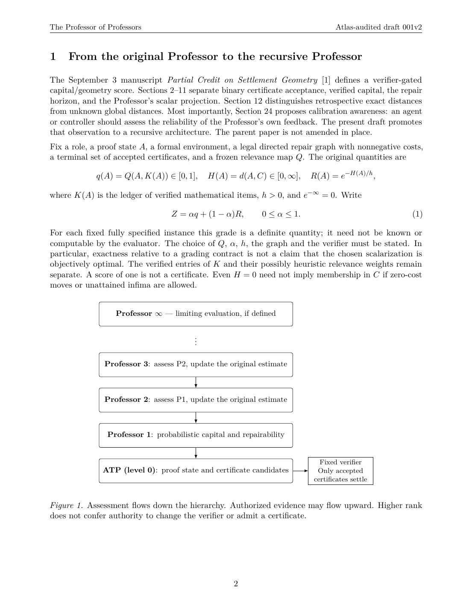
Readable text transcript — page 2
The Professor of Professors Atlas-audited draft 001v2
1 From the original Professor to the recursive Professor
The September 3 manuscript Partial Credit on Settlement Geometry [1] defines a verifier-gated
capital/geometry score. Sections 2–11 separate binary certificate acceptance, verified capital, the repair
horizon, and the Professor’s scalar projection. Section 12 distinguishes retrospective exact distances
from unknown global distances. Most importantly, Section 24 proposes calibration awareness: an agent
or controller should assess the reliability of the Professor’s own feedback. The present draft promotes
that observation to a recursive architecture. The parent paper is not amended in place.
Fix a role, a proof state A, a formal environment, a legal directed repair graph with nonnegative costs,
a terminal set of accepted certificates, and a frozen relevance map Q. The original quantities are
q(A) = Q(A, K(A)) ∈ [0, 1], H(A) = d(A, C) ∈ [0, ∞], R(A) = e−H(A)/h ,
where K(A) is the ledger of verified mathematical items, h > 0, and e−∞ = 0. Write
Z = αq + (1 − α)R, 0 ≤ α ≤ 1. (1)
For each fixed fully specified instance this grade is a definite quantity; it need not be known or
computable by the evaluator. The choice of Q, α, h, the graph and the verifier must be stated. In
particular, exactness relative to a grading contract is not a claim that the chosen scalarization is
objectively optimal. The verified entries of K and their possibly heuristic relevance weights remain
separate. A score of one is not a certificate. Even H = 0 need not imply membership in C if zero-cost
moves or unattained infima are allowed.
Professor ∞ — limiting evaluation, if defined
..
.
Professor 3: assess P2, update the original estimate
Professor 2: assess P1, update the original estimate
Professor 1: probabilistic capital and repairability
Fixed verifier
ATP (level 0): proof state and certificate candidates Only accepted
certificates settle
Figure 1. Assessment flows down the hierarchy. Authorized evidence may flow upward. Higher rank
does not confer authority to change the verifier or admit a certificate.
2Page 3 of 12
Open this page in PDF · Full-size page image · Page index
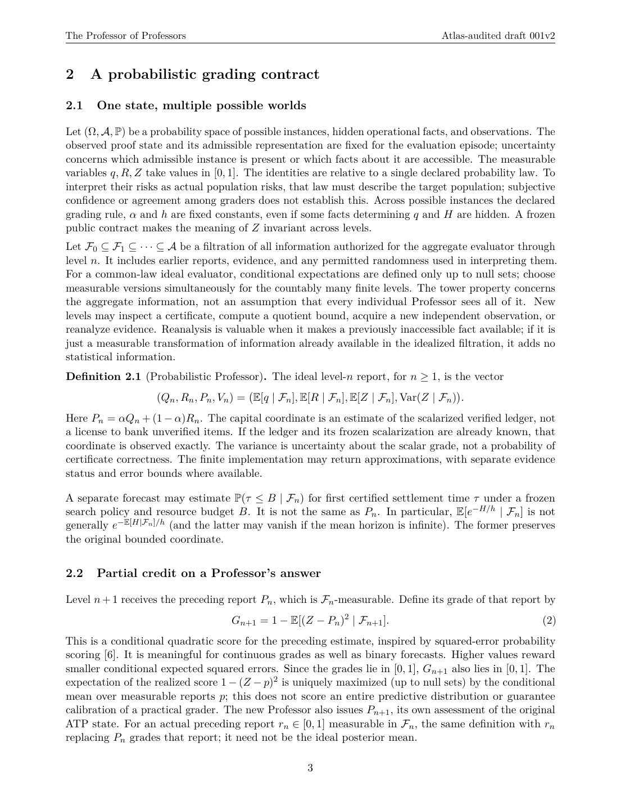
Readable text transcript — page 3
The Professor of Professors Atlas-audited draft 001v2
2 A probabilistic grading contract
2.1 One state, multiple possible worlds
Let (Ω, A, P) be a probability space of possible instances, hidden operational facts, and observations. The
observed proof state and its admissible representation are fixed for the evaluation episode; uncertainty
concerns which admissible instance is present or which facts about it are accessible. The measurable
variables q, R, Z take values in [0, 1]. The identities are relative to a single declared probability law. To
interpret their risks as actual population risks, that law must describe the target population; subjective
confidence or agreement among graders does not establish this. Across possible instances the declared
grading rule, α and h are fixed constants, even if some facts determining q and H are hidden. A frozen
public contract makes the meaning of Z invariant across levels.
Let F0 ⊆ F1 ⊆ · · · ⊆ A be a filtration of all information authorized for the aggregate evaluator through
level n. It includes earlier reports, evidence, and any permitted randomness used in interpreting them.
For a common-law ideal evaluator, conditional expectations are defined only up to null sets; choose
measurable versions simultaneously for the countably many finite levels. The tower property concerns
the aggregate information, not an assumption that every individual Professor sees all of it. New
levels may inspect a certificate, compute a quotient bound, acquire a new independent observation, or
reanalyze evidence. Reanalysis is valuable when it makes a previously inaccessible fact available; if it is
just a measurable transformation of information already available in the idealized filtration, it adds no
statistical information.
Definition 2.1 (Probabilistic Professor). The ideal level-n report, for n ≥ 1, is the vector
(Qn , Rn , Pn , Vn ) = E[q | Fn ], E[R | Fn ], E[Z | Fn ], Var(Z | Fn ) .
Here Pn = αQn + (1 − α)Rn . The capital coordinate is an estimate of the scalarized verified ledger, not
a license to bank unverified items. If the ledger and its frozen scalarization are already known, that
coordinate is observed exactly. The variance is uncertainty about the scalar grade, not a probability of
certificate correctness. The finite implementation may return approximations, with separate evidence
status and error bounds where available.
A separate forecast may estimate P(τ ≤ B | Fn ) for first certified settlement time τ under a frozen
search policy and resource budget B. It is not the same as Pn . In particular, E[e−H/h | Fn ] is not
generally e−E[H|Fn ]/h (and the latter may vanish if the mean horizon is infinite). The former preserves
the original bounded coordinate.
2.2 Partial credit on a Professor’s answer
Level n + 1 receives the preceding report Pn , which is Fn -measurable. Define its grade of that report by
Gn+1 = 1 − E[(Z − Pn )2 | Fn+1 ]. (2)
This is a conditional quadratic score for the preceding estimate, inspired by squared-error probability
scoring [6]. It is meaningful for continuous grades as well as binary forecasts. Higher values reward
smaller conditional expected squared errors. Since the grades lie in [0, 1], Gn+1 also lies in [0, 1]. The
expectation of the realized score 1 − (Z − p)2 is uniquely maximized (up to null sets) by the conditional
mean over measurable reports p; this does not score an entire predictive distribution or guarantee
calibration of a practical grader. The new Professor also issues Pn+1 , its own assessment of the original
ATP state. For an actual preceding report rn ∈ [0, 1] measurable in Fn , the same definition with rn
replacing Pn grades that report; it need not be the ideal posterior mean.
3Page 4 of 12
Open this page in PDF · Full-size page image · Page index
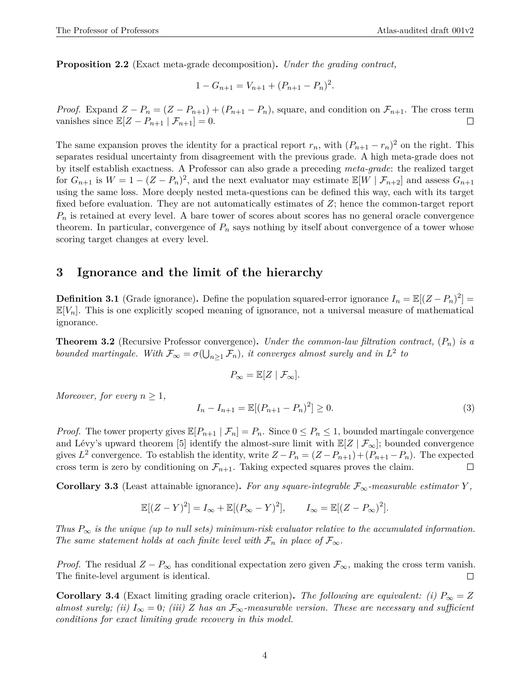
Readable text transcript — page 4
The Professor of Professors Atlas-audited draft 001v2
Proposition 2.2 (Exact meta-grade decomposition). Under the grading contract,
1 − Gn+1 = Vn+1 + (Pn+1 − Pn )2 .
Proof. Expand Z − Pn = (Z − Pn+1 ) + (Pn+1 − Pn ), square, and condition on Fn+1 . The cross term
vanishes since E[Z − Pn+1 | Fn+1 ] = 0.
The same expansion proves the identity for a practical report rn , with (Pn+1 − rn )2 on the right. This
separates residual uncertainty from disagreement with the previous grade. A high meta-grade does not
by itself establish exactness. A Professor can also grade a preceding meta-grade: the realized target
for Gn+1 is W = 1 − (Z − Pn )2 , and the next evaluator may estimate E[W | Fn+2 ] and assess Gn+1
using the same loss. More deeply nested meta-questions can be defined this way, each with its target
fixed before evaluation. They are not automatically estimates of Z; hence the common-target report
Pn is retained at every level. A bare tower of scores about scores has no general oracle convergence
theorem. In particular, convergence of Pn says nothing by itself about convergence of a tower whose
scoring target changes at every level.
3 Ignorance and the limit of the hierarchy
Definition 3.1 (Grade ignorance). Define the population squared-error ignorance In = E[(Z − Pn )2 ] =
E[Vn ]. This is one explicitly scoped meaning of ignorance, not a universal measure of mathematical
ignorance.
Theorem 3.2 (Recursive Professor convergence). Under the common-law filtration contract, (Pn ) is a
bounded martingale. With F∞ = σ( n≥1 Fn ), it converges almost surely and in L2 to
S
P∞ = E[Z | F∞ ].
Moreover, for every n ≥ 1,
In − In+1 = E[(Pn+1 − Pn )2 ] ≥ 0. (3)
Proof. The tower property gives E[Pn+1 | Fn ] = Pn . Since 0 ≤ Pn ≤ 1, bounded martingale convergence
and Lévy’s upward theorem [5] identify the almost-sure limit with E[Z | F∞ ]; bounded convergence
gives L2 convergence. To establish the identity, write Z − Pn = (Z − Pn+1 ) + (Pn+1 − Pn ). The expected
cross term is zero by conditioning on Fn+1 . Taking expected squares proves the claim.
Corollary 3.3 (Least attainable ignorance). For any square-integrable F∞ -measurable estimator Y ,
E[(Z − Y )2 ] = I∞ + E[(P∞ − Y )2 ], I∞ = E[(Z − P∞ )2 ].
Thus P∞ is the unique (up to null sets) minimum-risk evaluator relative to the accumulated information.
The same statement holds at each finite level with Fn in place of F∞ .
Proof. The residual Z − P∞ has conditional expectation zero given F∞ , making the cross term vanish.
The finite-level argument is identical.
Corollary 3.4 (Exact limiting grading oracle criterion). The following are equivalent: (i) P∞ = Z
almost surely; (ii) I∞ = 0; (iii) Z has an F∞ -measurable version. These are necessary and sufficient
conditions for exact limiting grade recovery in this model.
4Page 5 of 12
Open this page in PDF · Full-size page image · Page index
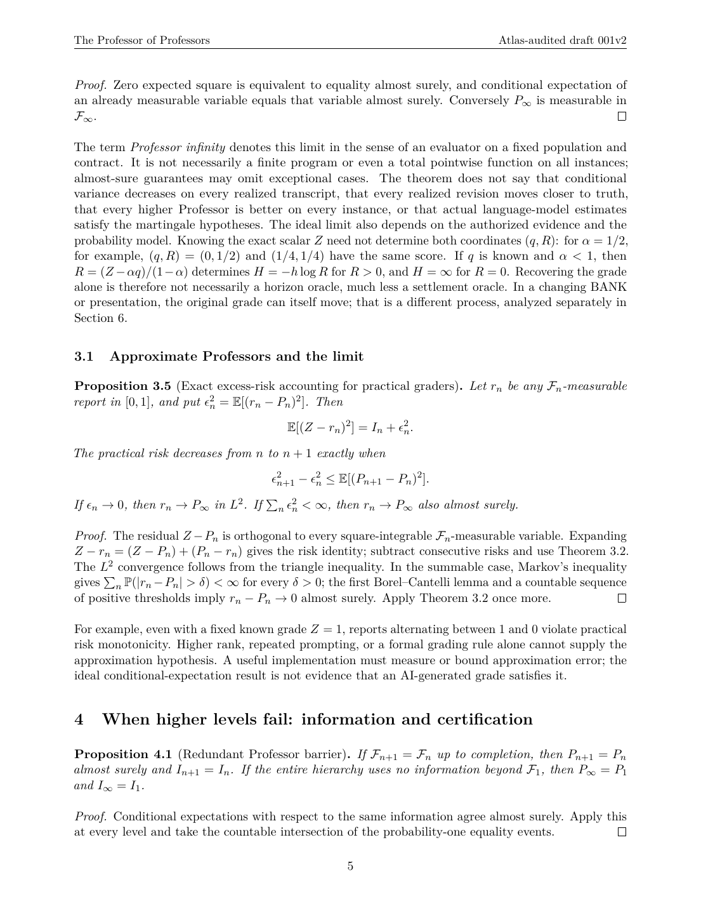
Readable text transcript — page 5
The Professor of Professors Atlas-audited draft 001v2
Proof. Zero expected square is equivalent to equality almost surely, and conditional expectation of
an already measurable variable equals that variable almost surely. Conversely P∞ is measurable in
F∞ .
The term Professor infinity denotes this limit in the sense of an evaluator on a fixed population and
contract. It is not necessarily a finite program or even a total pointwise function on all instances;
almost-sure guarantees may omit exceptional cases. The theorem does not say that conditional
variance decreases on every realized transcript, that every realized revision moves closer to truth,
that every higher Professor is better on every instance, or that actual language-model estimates
satisfy the martingale hypotheses. The ideal limit also depends on the authorized evidence and the
probability model. Knowing the exact scalar Z need not determine both coordinates (q, R): for α = 1/2,
for example, (q, R) = (0, 1/2) and (1/4, 1/4) have the same score. If q is known and α < 1, then
R = (Z − αq)/(1 − α) determines H = −h log R for R > 0, and H = ∞ for R = 0. Recovering the grade
alone is therefore not necessarily a horizon oracle, much less a settlement oracle. In a changing BANK
or presentation, the original grade can itself move; that is a different process, analyzed separately in
Section 6.
3.1 Approximate Professors and the limit
Proposition 3.5 (Exact excess-risk accounting for practical graders). Let rn be any Fn -measurable
report in [0, 1], and put ϵ2n = E[(rn − Pn )2 ]. Then
E[(Z − rn )2 ] = In + ϵ2n .
The practical risk decreases from n to n + 1 exactly when
ϵ2n+1 − ϵ2n ≤ E[(Pn+1 − Pn )2 ].
If ϵn → 0, then rn → P∞ in L2 . If 2
n ϵn < ∞, then rn → P∞ also almost surely.
P
Proof. The residual Z − Pn is orthogonal to every square-integrable Fn -measurable variable. Expanding
Z − rn = (Z − Pn ) + (Pn − rn ) gives the risk identity; subtract consecutive risks and use Theorem 3.2.
The L2 convergence follows from the triangle inequality. In the summable case, Markov’s inequality
gives n P(|rn − Pn | > δ) < ∞ for every δ > 0; the first Borel–Cantelli lemma and a countable sequence
P
of positive thresholds imply rn − Pn → 0 almost surely. Apply Theorem 3.2 once more.
For example, even with a fixed known grade Z = 1, reports alternating between 1 and 0 violate practical
risk monotonicity. Higher rank, repeated prompting, or a formal grading rule alone cannot supply the
approximation hypothesis. A useful implementation must measure or bound approximation error; the
ideal conditional-expectation result is not evidence that an AI-generated grade satisfies it.
4 When higher levels fail: information and certification
Proposition 4.1 (Redundant Professor barrier). If Fn+1 = Fn up to completion, then Pn+1 = Pn
almost surely and In+1 = In . If the entire hierarchy uses no information beyond F1 , then P∞ = P1
and I∞ = I1 .
Proof. Conditional expectations with respect to the same information agree almost surely. Apply this
at every level and take the countable intersection of the probability-one equality events.
5Page 6 of 12
Open this page in PDF · Full-size page image · Page index
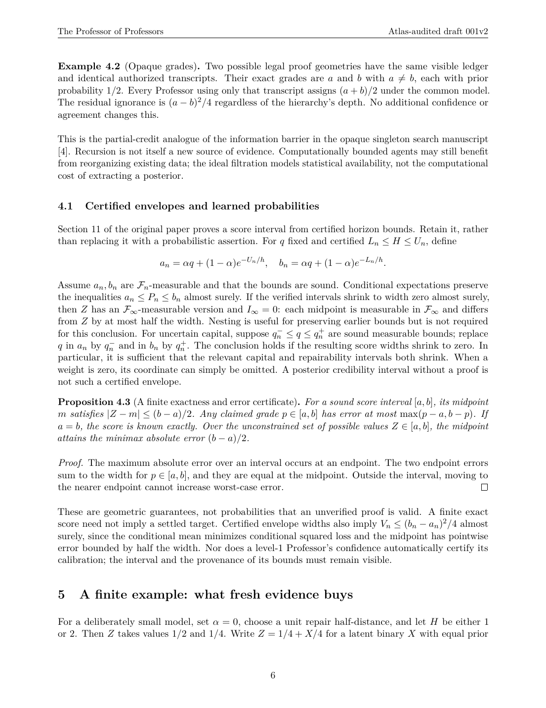
Readable text transcript — page 6
The Professor of Professors Atlas-audited draft 001v2
Example 4.2 (Opaque grades). Two possible legal proof geometries have the same visible ledger
and identical authorized transcripts. Their exact grades are a and b with a ̸= b, each with prior
probability 1/2. Every Professor using only that transcript assigns (a + b)/2 under the common model.
The residual ignorance is (a − b)2 /4 regardless of the hierarchy’s depth. No additional confidence or
agreement changes this.
This is the partial-credit analogue of the information barrier in the opaque singleton search manuscript
[4]. Recursion is not itself a new source of evidence. Computationally bounded agents may still benefit
from reorganizing existing data; the ideal filtration models statistical availability, not the computational
cost of extracting a posterior.
4.1 Certified envelopes and learned probabilities
Section 11 of the original paper proves a score interval from certified horizon bounds. Retain it, rather
than replacing it with a probabilistic assertion. For q fixed and certified Ln ≤ H ≤ Un , define
an = αq + (1 − α)e−Un /h , bn = αq + (1 − α)e−Ln /h .
Assume an , bn are Fn -measurable and that the bounds are sound. Conditional expectations preserve
the inequalities an ≤ Pn ≤ bn almost surely. If the verified intervals shrink to width zero almost surely,
then Z has an F∞ -measurable version and I∞ = 0: each midpoint is measurable in F∞ and differs
from Z by at most half the width. Nesting is useful for preserving earlier bounds but is not required
for this conclusion. For uncertain capital, suppose qn− ≤ q ≤ qn+ are sound measurable bounds; replace
q in an by qn− and in bn by qn+ . The conclusion holds if the resulting score widths shrink to zero. In
particular, it is sufficient that the relevant capital and repairability intervals both shrink. When a
weight is zero, its coordinate can simply be omitted. A posterior credibility interval without a proof is
not such a certified envelope.
Proposition 4.3 (A finite exactness and error certificate). For a sound score interval [a, b], its midpoint
m satisfies |Z − m| ≤ (b − a)/2. Any claimed grade p ∈ [a, b] has error at most max(p − a, b − p). If
a = b, the score is known exactly. Over the unconstrained set of possible values Z ∈ [a, b], the midpoint
attains the minimax absolute error (b − a)/2.
Proof. The maximum absolute error over an interval occurs at an endpoint. The two endpoint errors
sum to the width for p ∈ [a, b], and they are equal at the midpoint. Outside the interval, moving to
the nearer endpoint cannot increase worst-case error.
These are geometric guarantees, not probabilities that an unverified proof is valid. A finite exact
score need not imply a settled target. Certified envelope widths also imply Vn ≤ (bn − an )2 /4 almost
surely, since the conditional mean minimizes conditional squared loss and the midpoint has pointwise
error bounded by half the width. Nor does a level-1 Professor’s confidence automatically certify its
calibration; the interval and the provenance of its bounds must remain visible.
5 A finite example: what fresh evidence buys
For a deliberately small model, set α = 0, choose a unit repair half-distance, and let H be either 1
or 2. Then Z takes values 1/2 and 1/4. Write Z = 1/4 + X/4 for a latent binary X with equal prior
6Page 7 of 12
Open this page in PDF · Full-size page image · Page index
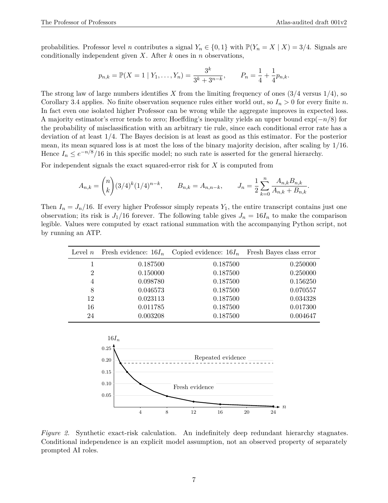
Readable text transcript — page 7
The Professor of Professors Atlas-audited draft 001v2
probabilities. Professor level n contributes a signal Yn ∈ {0, 1} with P(Yn = X | X) = 3/4. Signals are
conditionally independent given X. After k ones in n observations,
3k 1 1
pn,k = P(X = 1 | Y1 , . . . , Yn ) = , Pn = + pn,k .
3k + 3n−k 4 4
The strong law of large numbers identifies X from the limiting frequency of ones (3/4 versus 1/4), so
Corollary 3.4 applies. No finite observation sequence rules either world out, so In > 0 for every finite n.
In fact even one isolated higher Professor can be wrong while the aggregate improves in expected loss.
A majority estimator’s error tends to zero; Hoeffding’s inequality yields an upper bound exp(−n/8) for
the probability of misclassification with an arbitrary tie rule, since each conditional error rate has a
deviation of at least 1/4. The Bayes decision is at least as good as this estimator. For the posterior
mean, its mean squared loss is at most the loss of the binary majority decision, after scaling by 1/16.
Hence In ≤ e−n/8 /16 in this specific model; no such rate is asserted for the general hierarchy.
For independent signals the exact squared-error risk for X is computed from
n
1X
!
n An,k Bn,k
An,k = (3/4)k (1/4)n−k , Bn,k = An,n−k , Jn = .
k 2 k=0 An,k + Bn,k
Then In = Jn /16. If every higher Professor simply repeats Y1 , the entire transcript contains just one
observation; its risk is J1 /16 forever. The following table gives Jn = 16In to make the comparison
legible. Values were computed by exact rational summation with the accompanying Python script, not
by running an ATP.
Level n Fresh evidence: 16In Copied evidence: 16In Fresh Bayes class error
1 0.187500 0.187500 0.250000
2 0.150000 0.187500 0.250000
4 0.098780 0.187500 0.156250
8 0.046573 0.187500 0.070557
12 0.023113 0.187500 0.034328
16 0.011785 0.187500 0.017300
24 0.003208 0.187500 0.004647
16In
0.25
0.20 Repeated evidence
0.15
0.10
Fresh evidence
0.05
n
4 8 12 16 20 24
Figure 2. Synthetic exact-risk calculation. An indefinitely deep redundant hierarchy stagnates.
Conditional independence is an explicit model assumption, not an observed property of separately
prompted AI roles.
7Page 8 of 12
Open this page in PDF · Full-size page image · Page index
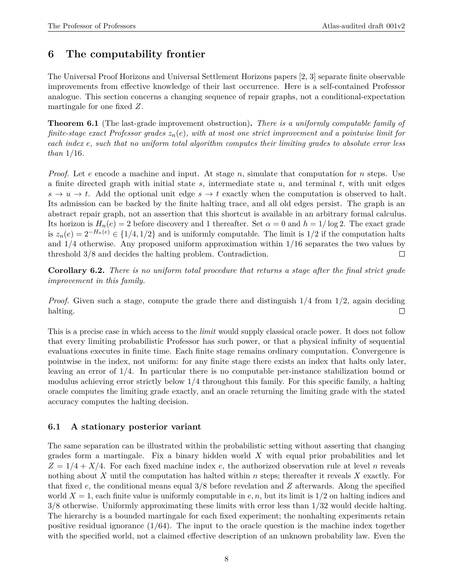
Readable text transcript — page 8
The Professor of Professors Atlas-audited draft 001v2
6 The computability frontier
The Universal Proof Horizons and Universal Settlement Horizons papers [2, 3] separate finite observable
improvements from effective knowledge of their last occurrence. Here is a self-contained Professor
analogue. This section concerns a changing sequence of repair graphs, not a conditional-expectation
martingale for one fixed Z.
Theorem 6.1 (The last-grade improvement obstruction). There is a uniformly computable family of
finite-stage exact Professor grades zn (e), with at most one strict improvement and a pointwise limit for
each index e, such that no uniform total algorithm computes their limiting grades to absolute error less
than 1/16.
Proof. Let e encode a machine and input. At stage n, simulate that computation for n steps. Use
a finite directed graph with initial state s, intermediate state u, and terminal t, with unit edges
s → u → t. Add the optional unit edge s → t exactly when the computation is observed to halt.
Its admission can be backed by the finite halting trace, and all old edges persist. The graph is an
abstract repair graph, not an assertion that this shortcut is available in an arbitrary formal calculus.
Its horizon is Hn (e) = 2 before discovery and 1 thereafter. Set α = 0 and h = 1/ log 2. The exact grade
is zn (e) = 2−Hn (e) ∈ {1/4, 1/2} and is uniformly computable. The limit is 1/2 if the computation halts
and 1/4 otherwise. Any proposed uniform approximation within 1/16 separates the two values by
threshold 3/8 and decides the halting problem. Contradiction.
Corollary 6.2. There is no uniform total procedure that returns a stage after the final strict grade
improvement in this family.
Proof. Given such a stage, compute the grade there and distinguish 1/4 from 1/2, again deciding
halting.
This is a precise case in which access to the limit would supply classical oracle power. It does not follow
that every limiting probabilistic Professor has such power, or that a physical infinity of sequential
evaluations executes in finite time. Each finite stage remains ordinary computation. Convergence is
pointwise in the index, not uniform: for any finite stage there exists an index that halts only later,
leaving an error of 1/4. In particular there is no computable per-instance stabilization bound or
modulus achieving error strictly below 1/4 throughout this family. For this specific family, a halting
oracle computes the limiting grade exactly, and an oracle returning the limiting grade with the stated
accuracy computes the halting decision.
6.1 A stationary posterior variant
The same separation can be illustrated within the probabilistic setting without asserting that changing
grades form a martingale. Fix a binary hidden world X with equal prior probabilities and let
Z = 1/4 + X/4. For each fixed machine index e, the authorized observation rule at level n reveals
nothing about X until the computation has halted within n steps; thereafter it reveals X exactly. For
that fixed e, the conditional means equal 3/8 before revelation and Z afterwards. Along the specified
world X = 1, each finite value is uniformly computable in e, n, but its limit is 1/2 on halting indices and
3/8 otherwise. Uniformly approximating these limits with error less than 1/32 would decide halting.
The hierarchy is a bounded martingale for each fixed experiment; the nonhalting experiments retain
positive residual ignorance (1/64). The input to the oracle question is the machine index together
with the specified world, not a claimed effective description of an unknown probability law. Even the
8Page 9 of 12
Open this page in PDF · Full-size page image · Page index
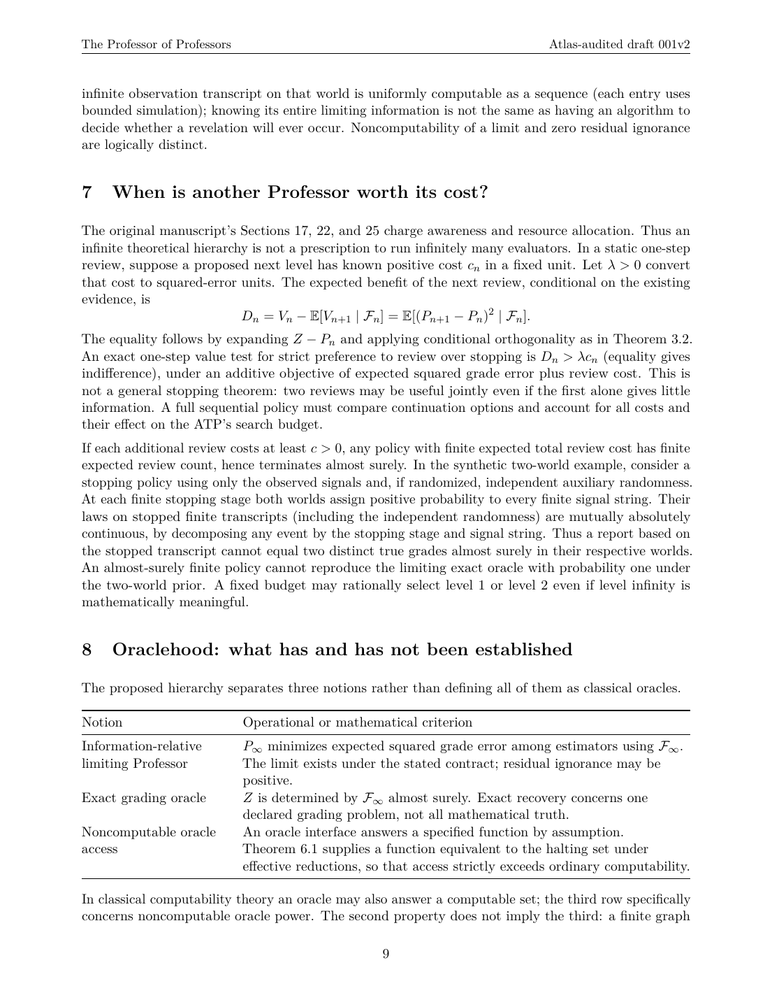
Readable text transcript — page 9
The Professor of Professors Atlas-audited draft 001v2
infinite observation transcript on that world is uniformly computable as a sequence (each entry uses
bounded simulation); knowing its entire limiting information is not the same as having an algorithm to
decide whether a revelation will ever occur. Noncomputability of a limit and zero residual ignorance
are logically distinct.
7 When is another Professor worth its cost?
The original manuscript’s Sections 17, 22, and 25 charge awareness and resource allocation. Thus an
infinite theoretical hierarchy is not a prescription to run infinitely many evaluators. In a static one-step
review, suppose a proposed next level has known positive cost cn in a fixed unit. Let λ > 0 convert
that cost to squared-error units. The expected benefit of the next review, conditional on the existing
evidence, is
Dn = Vn − E[Vn+1 | Fn ] = E[(Pn+1 − Pn )2 | Fn ].
The equality follows by expanding Z − Pn and applying conditional orthogonality as in Theorem 3.2.
An exact one-step value test for strict preference to review over stopping is Dn > λcn (equality gives
indifference), under an additive objective of expected squared grade error plus review cost. This is
not a general stopping theorem: two reviews may be useful jointly even if the first alone gives little
information. A full sequential policy must compare continuation options and account for all costs and
their effect on the ATP’s search budget.
If each additional review costs at least c > 0, any policy with finite expected total review cost has finite
expected review count, hence terminates almost surely. In the synthetic two-world example, consider a
stopping policy using only the observed signals and, if randomized, independent auxiliary randomness.
At each finite stopping stage both worlds assign positive probability to every finite signal string. Their
laws on stopped finite transcripts (including the independent randomness) are mutually absolutely
continuous, by decomposing any event by the stopping stage and signal string. Thus a report based on
the stopped transcript cannot equal two distinct true grades almost surely in their respective worlds.
An almost-surely finite policy cannot reproduce the limiting exact oracle with probability one under
the two-world prior. A fixed budget may rationally select level 1 or level 2 even if level infinity is
mathematically meaningful.
8 Oraclehood: what has and has not been established
The proposed hierarchy separates three notions rather than defining all of them as classical oracles.
Notion Operational or mathematical criterion
Information-relative P∞ minimizes expected squared grade error among estimators using F∞ .
limiting Professor The limit exists under the stated contract; residual ignorance may be
positive.
Exact grading oracle Z is determined by F∞ almost surely. Exact recovery concerns one
declared grading problem, not all mathematical truth.
Noncomputable oracle An oracle interface answers a specified function by assumption.
access Theorem 6.1 supplies a function equivalent to the halting set under
effective reductions, so that access strictly exceeds ordinary computability.
In classical computability theory an oracle may also answer a computable set; the third row specifically
concerns noncomputable oracle power. The second property does not imply the third: a finite graph
9Page 10 of 12
Open this page in PDF · Full-size page image · Page index
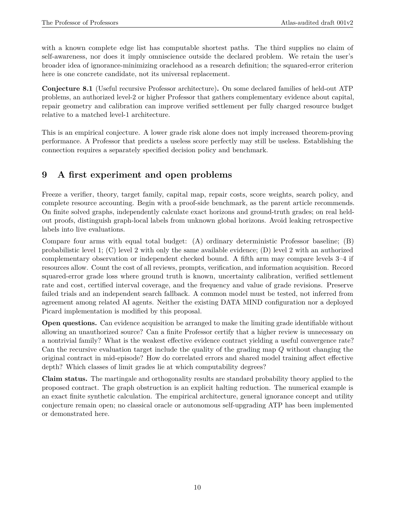
Readable text transcript — page 10
The Professor of Professors Atlas-audited draft 001v2
with a known complete edge list has computable shortest paths. The third supplies no claim of
self-awareness, nor does it imply omniscience outside the declared problem. We retain the user’s
broader idea of ignorance-minimizing oraclehood as a research definition; the squared-error criterion
here is one concrete candidate, not its universal replacement.
Conjecture 8.1 (Useful recursive Professor architecture). On some declared families of held-out ATP
problems, an authorized level-2 or higher Professor that gathers complementary evidence about capital,
repair geometry and calibration can improve verified settlement per fully charged resource budget
relative to a matched level-1 architecture.
This is an empirical conjecture. A lower grade risk alone does not imply increased theorem-proving
performance. A Professor that predicts a useless score perfectly may still be useless. Establishing the
connection requires a separately specified decision policy and benchmark.
9 A first experiment and open problems
Freeze a verifier, theory, target family, capital map, repair costs, score weights, search policy, and
complete resource accounting. Begin with a proof-side benchmark, as the parent article recommends.
On finite solved graphs, independently calculate exact horizons and ground-truth grades; on real held-
out proofs, distinguish graph-local labels from unknown global horizons. Avoid leaking retrospective
labels into live evaluations.
Compare four arms with equal total budget: (A) ordinary deterministic Professor baseline; (B)
probabilistic level 1; (C) level 2 with only the same available evidence; (D) level 2 with an authorized
complementary observation or independent checked bound. A fifth arm may compare levels 3–4 if
resources allow. Count the cost of all reviews, prompts, verification, and information acquisition. Record
squared-error grade loss where ground truth is known, uncertainty calibration, verified settlement
rate and cost, certified interval coverage, and the frequency and value of grade revisions. Preserve
failed trials and an independent search fallback. A common model must be tested, not inferred from
agreement among related AI agents. Neither the existing DATA MIND configuration nor a deployed
Picard implementation is modified by this proposal.
Open questions. Can evidence acquisition be arranged to make the limiting grade identifiable without
allowing an unauthorized source? Can a finite Professor certify that a higher review is unnecessary on
a nontrivial family? What is the weakest effective evidence contract yielding a useful convergence rate?
Can the recursive evaluation target include the quality of the grading map Q without changing the
original contract in mid-episode? How do correlated errors and shared model training affect effective
depth? Which classes of limit grades lie at which computability degrees?
Claim status. The martingale and orthogonality results are standard probability theory applied to the
proposed contract. The graph obstruction is an explicit halting reduction. The numerical example is
an exact finite synthetic calculation. The empirical architecture, general ignorance concept and utility
conjecture remain open; no classical oracle or autonomous self-upgrading ATP has been implemented
or demonstrated here.
10Page 11 of 12
Open this page in PDF · Full-size page image · Page index
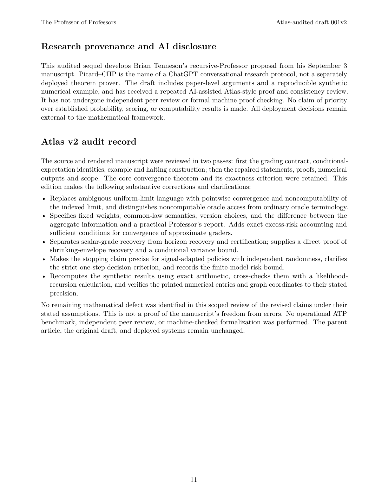
Readable text transcript — page 11
The Professor of Professors Atlas-audited draft 001v2
Research provenance and AI disclosure
This audited sequel develops Brian Tenneson’s recursive-Professor proposal from his September 3
manuscript. Picard–CIIP is the name of a ChatGPT conversational research protocol, not a separately
deployed theorem prover. The draft includes paper-level arguments and a reproducible synthetic
numerical example, and has received a repeated AI-assisted Atlas-style proof and consistency review.
It has not undergone independent peer review or formal machine proof checking. No claim of priority
over established probability, scoring, or computability results is made. All deployment decisions remain
external to the mathematical framework.
Atlas v2 audit record
The source and rendered manuscript were reviewed in two passes: first the grading contract, conditional-
expectation identities, example and halting construction; then the repaired statements, proofs, numerical
outputs and scope. The core convergence theorem and its exactness criterion were retained. This
edition makes the following substantive corrections and clarifications:
• Replaces ambiguous uniform-limit language with pointwise convergence and noncomputability of
the indexed limit, and distinguishes noncomputable oracle access from ordinary oracle terminology.
• Specifies fixed weights, common-law semantics, version choices, and the difference between the
aggregate information and a practical Professor’s report. Adds exact excess-risk accounting and
sufficient conditions for convergence of approximate graders.
• Separates scalar-grade recovery from horizon recovery and certification; supplies a direct proof of
shrinking-envelope recovery and a conditional variance bound.
• Makes the stopping claim precise for signal-adapted policies with independent randomness, clarifies
the strict one-step decision criterion, and records the finite-model risk bound.
• Recomputes the synthetic results using exact arithmetic, cross-checks them with a likelihood-
recursion calculation, and verifies the printed numerical entries and graph coordinates to their stated
precision.
No remaining mathematical defect was identified in this scoped review of the revised claims under their
stated assumptions. This is not a proof of the manuscript’s freedom from errors. No operational ATP
benchmark, independent peer review, or machine-checked formalization was performed. The parent
article, the original draft, and deployed systems remain unchanged.
11Page 12 of 12
Open this page in PDF · Full-size page image · Page index
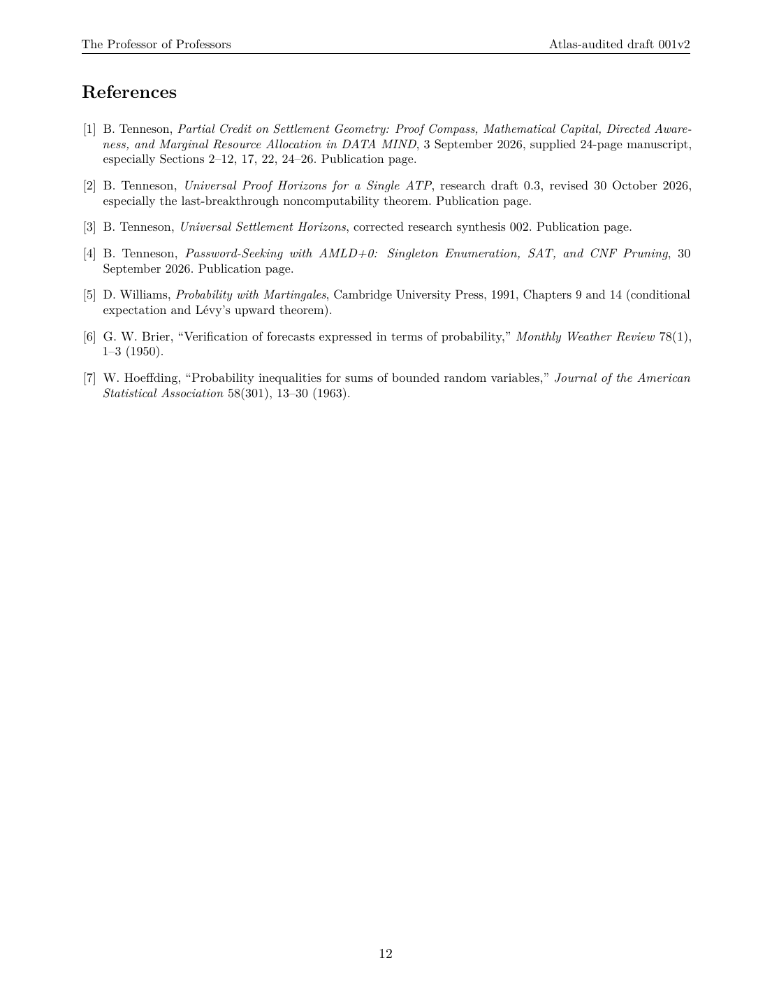
Readable text transcript — page 12
The Professor of Professors Atlas-audited draft 001v2
References
[1] B. Tenneson, Partial Credit on Settlement Geometry: Proof Compass, Mathematical Capital, Directed Aware-
ness, and Marginal Resource Allocation in DATA MIND, 3 September 2026, supplied 24-page manuscript,
especially Sections 2–12, 17, 22, 24–26. Publication page.
[2] B. Tenneson, Universal Proof Horizons for a Single ATP, research draft 0.3, revised 30 October 2026,
especially the last-breakthrough noncomputability theorem. Publication page.
[3] B. Tenneson, Universal Settlement Horizons, corrected research synthesis 002. Publication page.
[4] B. Tenneson, Password-Seeking with AMLD+0: Singleton Enumeration, SAT, and CNF Pruning, 30
September 2026. Publication page.
[5] D. Williams, Probability with Martingales, Cambridge University Press, 1991, Chapters 9 and 14 (conditional
expectation and Lévy’s upward theorem).
[6] G. W. Brier, “Verification of forecasts expressed in terms of probability,” Monthly Weather Review 78(1),
1–3 (1950).
[7] W. Hoeffding, “Probability inequalities for sums of bounded random variables,” Journal of the American
Statistical Association 58(301), 13–30 (1963).
12